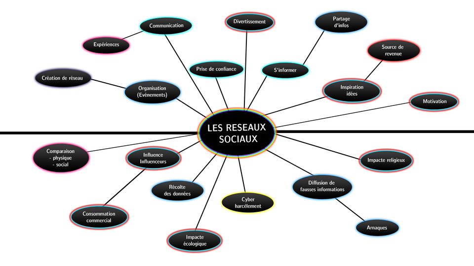

Une cartographie interactive complète des controverses numériques contemporaines.
Explorer l'étudeLes réseaux sociaux numériques occupent aujourd’hui une place centrale dans les sociétés contemporaines...
Les réseaux sociaux constituent-ils un progrès social ou une menace pour la société contemporaine ?
Premier réseau social moderne permettant de créer un profil et de se connecter à des amis. Il introduit le concept de “réseau social numérique”.
Premier réseau social à connaître un succès mondial important, mais limité techniquement et rapidement dépassé.
Premier grand réseau social populaire, permettant la personnalisation des profils et la diffusion de musique.
Créé par Mark Zuckerberg, Facebook devient rapidement le réseau social dominant à l’échelle mondiale.
Révolution de la vidéo en ligne avec le partage libre de contenus et l’émergence des premiers créateurs.
Apparition des messages courts (“tweets”) permettant une diffusion instantanée de l’information.
L’arrivée du smartphone transforme les usages : les réseaux sociaux deviennent mobiles et permanents.
Réseau centré sur l’image, il marque le début de la culture des influenceurs.
Les contenus ne sont plus affichés chronologiquement mais sélectionnés par des algorithmes personnalisés.
Développement du modèle basé sur les vidéos courtes et un algorithme ultra performant et addictif.
Scandale mondial révélant l’exploitation massive des données personnelles à des fins politiques.
Explosion de l’usage des réseaux sociaux mais aussi propagation massive de fake news et désinformation.
Transformation majeure de la plateforme et débats sur la liberté d’expression en ligne.
Mise en place de nouvelles lois européennes (DSA, DMA) et montée de l’intelligence artificielle dans les réseaux sociaux.
Cette carte mentale retrace les idées que nous avons eu comme point de départ de cette cartographie des controverses.

Interviews réalisées auprès de différentes personnes.
Point de vue d’un étudiant
Point de vue d’un adulte actif
Point de vue critique
Cliquez sur chaque pilier pour accéder à l'analyse complète.
Accédez au glossaire complet :
Après avoir consulté cette cartographie, comment percevez-vous les réseaux sociaux ?